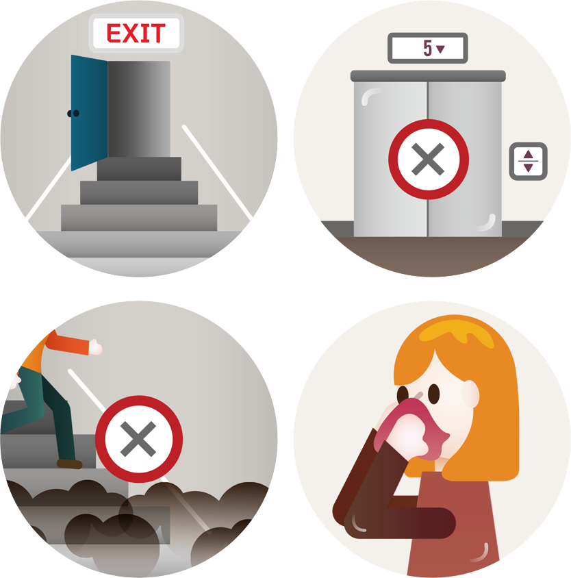

보이는 곳에서 불이 났다면 재빨리 소화기로 불을 끕니다. 작은 불은 담요를 물에 적셔 덮어 끌 수도 있습니다.
불이 다른 데로 옮겨 붙기 시작했다면 소화기로 끌 수 없습니다. 119에 신고하고 서둘러 대피해야 합니다.
화재 경보가 울리지 않으면 수동으로 울려 다른 사람들이 대피할 수 있게 합니다.
화재 경보가 울리면 비상구 표시를 따라 계단을 통해 건물 밖으로 나갑니다. 엘리베이터는 절대로 이용하면 안됩니다.

손수건이나 스카프로 코와 입을 막아 연기를 들이마시지 않도록 합니다.
비상계단 문을 열었을 때 연기가 차 있다면 불이 번지고 있다는 뜻이며 이동 중에 질식할 수 있으므로 다른 통로를 이용해야 합니다.